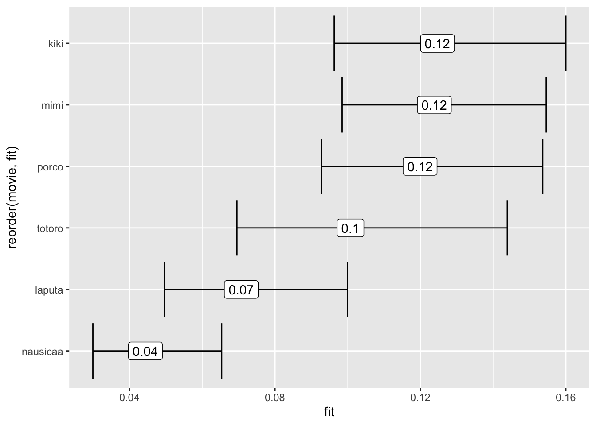
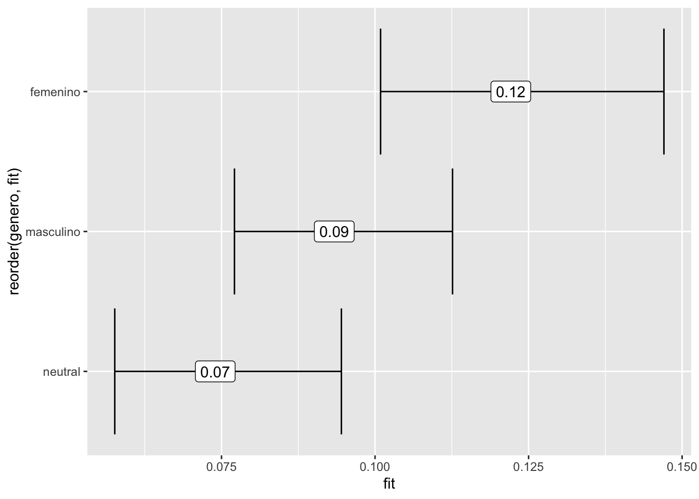
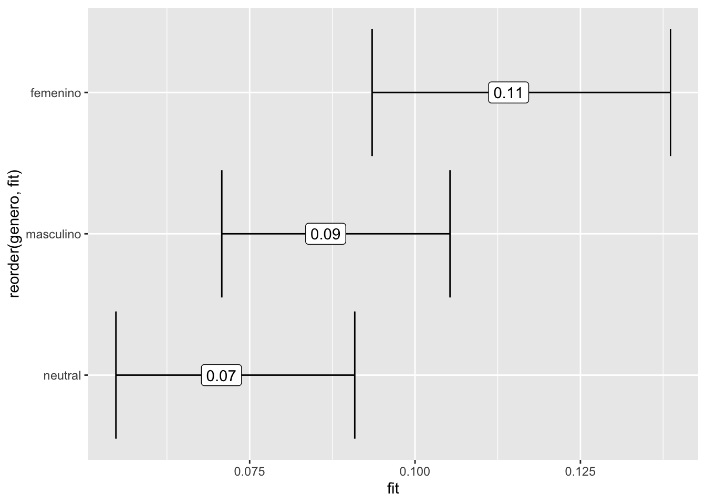

library(tidyverse)SPN 203 Using R to analyze language
This tutorial presents the basics of reading text as data into R, and doing descriptive and some statistical analyses on the use of intensifiers in Spanish from movie scripts. You can access the source code and the data for this tutorial on GitHub
Before we start
If you open this document in RStudio (cloud or desktop), you should be prompted to install the packages that are used in this document. If that’s not the case, run install.packages("tidyverse") before running the first line of code:
Data
We will be using data from movie scripts in Spanish. More specifically, we will look at Spanish scripts for movies by by Hayao Miyazaki.
There’s a folder called utf8-txt-files in this project, which contains the movie scripts in text format encoded in UTF8 (which makes it easier for R to read the files, and keeping the diacritics).
We will first list all the files we want to read into R:
files_to_read <- list.files(path = "utf8-txt-files",
full.names = TRUE)
files_to_read[1] "utf8-txt-files/script_kiki_spanish.txt"
[2] "utf8-txt-files/script_laputa_spanish.txt"
[3] "utf8-txt-files/script_mimi_spmex.txt"
[4] "utf8-txt-files/script_nausicaa_spanish.txt"
[5] "utf8-txt-files/script_porco_spanish.txt"
[6] "utf8-txt-files/script_totoro_spanish.txt" Then we will read these files in as one object all_text. Since these are regular text files (not data files), I’m using as delimitator a character I know is not present in the text (|):
all_text <- read_delim(files_to_read,
delim = "|",
col_names = FALSE,
id = "filename")The object all_text should be listed in your Environment tab in RStudio.
The next steps aim at cleaning up the filename so we extract the movie from it:
all_text <- all_text %>%
mutate(movie = str_remove_all(filename, "utf8-txt-files/script_"))all_text <- all_text %>%
mutate(movie = str_remove_all(movie, "_spanish.txt"))all_text <- all_text %>%
mutate(movie = str_remove_all(movie, "_spmex.txt"))Now that we have a variable called movie, we can count how many lines of script we have for each movie using the count() function:
all_text %>%
count(movie)Some text clean up
You might have noticed that there are some extra special character in the text, like tabs (which are represented in R as \\t). Let’s clean up the text by removing all tabs from it:
all_text <- all_text %>%
mutate(clean_text = str_remove_all(X1, "\\t"))Variable
We will be looking at intensifiers in the text for these movie scripts. Here’s the intensifiers (adverbs that modify adjectives) I know in Spanish:
- muy
- tan
- bastante
Can you think of any other intensifier?
We can search the text by using str_detect inside a filter function:
all_text %>%
filter(str_detect(clean_text, "muy")) %>%
distinct(clean_text)Tokenize the data
It’s pretty common to count occurrences of words when working with text. To do so, we first need to tokenize our text – which means to split the text in individual words.
We will be using the package tidytext for this. You should have been prompted to install the packages that are used in this document. If that’s not the case, run install.packages("tidytext") before running this line of code:
library(tidytext)We will create a new object with our tokens, by using the unnest_tokens() function:
tokenized_texts <- all_text %>%
unnest_tokens(word, clean_text)Since we are working with intensifiers, it’s helpful to see what word (or token) follows each intensifier. Let’s get the lead word (the one that follows each token in our data) and add it as an extra variable in our data called following_word.
tokenized_texts <- tokenized_texts %>%
mutate(following_word = lead(word))tokenized_texts %>%
filter(word == "muy") %>%
count(following_word, sort = TRUE)Now we can filter word by the intensifier we want (don’t forget to use quotes around the intensifier we are looking for) and count the frequency of words that follow that intensifier:
tokenized_texts %>%
filter(word == "tan") %>%
count(following_word, sort = TRUE)Let’s try a different intensifier:
tokenized_texts %>%
filter(word == "bastante") %>%
count(following_word, sort = TRUE)Annotated text
Text annotation is really helpful when searching for certain grammatical class (like adjectives and adverbs). I annotated the text with part-of-speech (POS) labels and then extracted all adjectives from the text automatically, with some post-processing to eliminate false positives. That is to say that there’s noise in the data since these tokens were not coded by humans. This data is used to the purpose of this demonstration, not as valid findings regarding the use of intensifiers in Spanish.
Let’s read that annotated in R (it’s in a comma separated values file):
annotated_text <- read_csv("data/annotated_text.csv")Let’s explore the data a bit.
There’s a pos label for every token and the previous token. There’s also a variable called intensified with is coded as 1 when the adjective is intensified (it as a preceding adverb) and 0 when it’s not. The previous_token is the intensifier.
We filter the data looking for adjectives that are intensified in the text, then we count the intensifiers:
annotated_text %>%
filter(intensified == 1) %>%
count(previous_token, sort = TRUE)We can also count the adjectives that are intensified:
annotated_text %>%
filter(intensified == 1) %>%
count(token, sort = TRUE)Since the variable intensified is a binary variable (1 for yes, the adjective is intensified, and 0 for no), we can do a mean of this variable by movie to get what percentage of adjectives are intensified in the different movie scripts.
annotated_text %>%
group_by(movie) %>%
summarize(percent_intensified = mean(intensified)) %>%
arrange(-percent_intensified)The percentages by themselves don’t tell us much, since we don’t know if these differences are statistcally different. We need to run a statistical test to find out.
In this case, since our response variable (intensified) is binary (represented by 0s and 1s) we will run logistic regression:
model_movie <- glm(formula = intensified ~ movie,
data = annotated_text,
family = "binomial")The best way to visualize the results is by plotting them. You should have been prompted to install the packages that are used in this document. If that’s not the case, run install.packages("effects") before running these lines of code:
library(effects)Loading required package: carDatalattice theme set by effectsTheme()
See ?effectsTheme for details.effect("movie", model_movie) %>%
data.frame() %>%
ggplot(aes(y = reorder(movie, fit),
x = fit,
xmin = lower,
xmax = upper,
label = round(fit, 2))) +
geom_errorbar() +
geom_label()
Note how the percentages are similar to what we had calculated before. The difference is that now we have confidence intervals which tells us if the different groups are different or not (overlapping intervals indicate no differences).
We can do the same with the grammatical gender of the adjective. Is one type of adjective intensified more than the others?
annotated_text %>%
group_by(genero) %>%
summarize(percent_intensified = mean(intensified)) %>%
arrange(-percent_intensified)Let’s build our logistic regression model and visualize our results:
model_genero <- glm(formula = intensified ~ genero,
data = annotated_text,
family = "binomial")
effect("genero", model_genero) %>%
data.frame() %>%
ggplot(aes(y = reorder(genero, fit),
x = fit,
xmin = lower,
xmax = upper,
label = round(fit, 2))) +
geom_errorbar() +
geom_label()
We built our statistical models with just one predictor – we can also run multivariate models.
The question here is, controling for adjective gender, do we still see differences in intensification across the movie scripts?
model_multivariado <- glm(formula = intensified ~ movie + genero,
data = annotated_text,
family = "binomial")
effect("genero", model_multivariado) %>%
data.frame() %>%
ggplot(aes(y = reorder(genero, fit),
x = fit,
xmin = lower,
xmax = upper,
label = round(fit, 2))) +
geom_errorbar() +
geom_label()
effect("movie", model_multivariado) %>%
data.frame() %>%
ggplot(aes(y = reorder(movie, fit),
x = fit,
xmin = lower,
xmax = upper,
label = round(fit, 2))) +
geom_errorbar() +
geom_label()